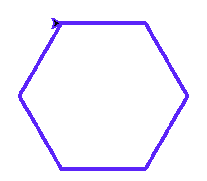
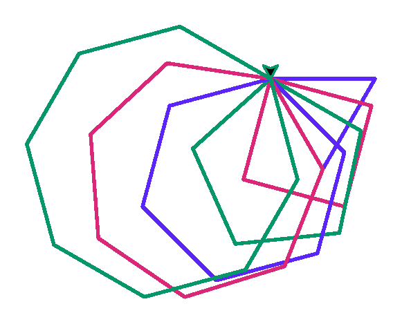

Мини-проект — Turtle Function Studio
Фигуры из глав 6 и 10 становятся настоящей переиспользуемой функцией с явными параметрами — и подводим итоги всей главы о функциях.
defпараметрыциклыTurtleЧто создаём
Финальный проект главы: превратим повторяющийся код рисования фигур из глав 6 и 10 в настоящую переиспользуемую функцию с параметрами.
Поток данных функции
import turtle
screen = turtle.Screen()
screen.setup(width=300, height=300)
artist = turtle.Turtle()
artist.speed(0)
artist.pencolor("#5B24F9")
artist.pensize(3)
def draw_polygon(artist, sides, length):
angle = 360 / sides
for _ in range(sides):
artist.forward(length)
artist.right(angle)
draw_polygon(artist, 6, 80)
screen.exitonclick()
Почему функция принимает artist явно
def draw_polygon(artist, sides, length):
angle = 360 / sides
for _ in range(sides):
artist.forward(length)
artist.right(angle)
draw_polygon(artist, 4, 100) # квадрат
draw_polygon(artist, 3, 100) # треугольник, без повторения кода!
draw_polygon(artist, 8, 60) # восьмиугольникartist, как в главе 10. Но параметр делает зависимость ЯВНОЙ (§13.15): сразу видно, что функция работает именно с той черепашкой, которую ей передали, — её можно переиспользовать с другой черепашкой (например, во время гонки Turtle из §12.6, где черепашек несколько) без единого изменения кода внутри.Функция внутри цикла: то же поведение, новый параметр на каждом шаге
cveta = ["#5B24F9", "#DB2777", "#059669"]
for i, sides in enumerate(range(3, 9)):
artist.pencolor(cveta[i % 3])
draw_polygon(artist, sides, 70)
artist.right(15)import turtle
screen = turtle.Screen()
screen.setup(width=420, height=420)
artist = turtle.Turtle()
artist.speed(0)
artist.pensize(2)
def draw_polygon(artist, sides, length):
angle = 360 / sides
for _ in range(sides):
artist.forward(length)
artist.right(angle)
cveta = ["#5B24F9", "#DB2777", "#059669"]
for i, sides in enumerate(range(3, 9)):
artist.pencolor(cveta[i % 3])
draw_polygon(artist, sides, 70)
artist.right(15)
screen.exitonclick()
draw_polygon; сама функция решает, КАК нарисовать многоугольник с этими данными. Ни один из двух инструментов не заменяет другой.Добавьте функции параметры x, y (со значениями по умолчанию 0, 0) — чтобы можно было указать, откуда начинать рисовать фигуру.
Итоги главы
Инструментарий проектирования функции
Что мы узнали в этой главе
- Функция — именованный переиспользуемый кусок поведения: получает данные (параметры), работает с ними, возвращает результат (
return). - Вызов функции передаёт управление в её тело и обязательно возвращается к месту вызова — функция не выполняется «где-то в стороне».
- Параметр — имя в определении, аргумент — значение в вызове. Присваивание параметру и мутация переданного объекта — два разных действия с разными последствиями снаружи.
- Изменяемое значение по умолчанию создаётся ОДИН РАЗ при определении функции — используйте
Noneкак сигнальное значение вместо[]или{}. *argsи**kwargsсобирают лишние аргументы в кортеж и словарь соответственно; та же*/**на месте вызова распаковывает коллекцию обратно.- Функция без
returnвсё равно возвращаетNone— это не «ничего», а конкретный объект. - Python ищет имя по правилу LEGB: Local → Enclosing → Global → Builtins.
- Функции, вызывающие функции, образуют стек вызовов — и traceback из главы 3 показывает именно этот стек в момент ошибки.
- Функции — объекты первого класса: их можно сохранять под другим именем, класть в коллекции, передавать другим функциям (
sorted(key=...)). lambda— маленькая безымянная функция для одного выражения, не более «современная» заменаdef.- Рефакторинг большого скрипта в набор функций делает главную программу читаемым описанием алгоритма, а каждую часть — независимо тестируемой.
Что дальше
Мы научились группировать ПОВЕДЕНИЕ в функции. Но во многих наших проектах данные и поведение, которое с ними работает, естественно ходят парой — контакт со своим телефоном, ученик со своим баллом, черепашка со своим цветом и позицией. В следующей главе — «Создаём объекты реального мира» — мы научимся объединять данные и функции, которые с ними работают, в одну именованную структуру.